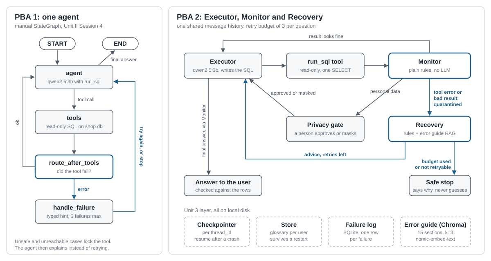

Our agent said this with full confidence.
The real number is Rs 2,40,300. No error. No warning.
How do you catch an AI agent that is wrong and doesn't know it?
"no such column: amount". Easy to catch, easy to retry.
Prices read in paise, a missing GROUP BY. The query runs fine.
The next question builds on it, and the mistake travels.
qwen2.5:3b · LangGraph · SQLite · Chroma · runs fully offline, free
Swaraj Mandre · Saumya Joshi · Siddhant Pawar
Topic 17: an agent that detects and recovers from its own tool failures
One generic notice for every error. Sent the same broken query 7 times. Told the user to run a DELETE by hand.
Sort the error, give a specific hint, cap retries at 3, lock the tool when retrying can't help.
Still blind to wrong data that raises no error.

Executor writes and runs the SQL. The only one that touches the data.
Monitor checks every result and answer with plain rules. No model, same verdict every time.
Recovery gives advice from our error guide, or stops after 3 retries.
"And in September?" knows what you asked before. A crashed run resumes.
"Premium product means above Rs 1500" survives a restart.
Every failure, its SQL and what happened next, in SQLite.
15 sections in Chroma. Says "I don't know" when the guide doesn't cover it.
python ta2/run.py containmentpython ta2/run.py failurespython ta2/run.py privacytraces/ as a backupruns carried the wrong number into the follow-up answer
The bad result is swapped for a quarantine note before any agent reads it
Cost: 2 extra model calls and about 2 seconds per question.
| PBA 1 | PBA 2 | |
|---|---|---|
| Wrong answers given to the user | 4 / 15 | 0 / 15 |
| Silent corruption caught | 0 / 3 | 3 / 3 |
| Model calls, corrupt case | 2.0 | 6.0 |
| Model calls, clean case | 2.0 | 3.0 |
Recovery costs 2 to 3 times the calls. Even the clean case needs one retry.
Found by testingA missing GROUP BY slipped past our number checks. The Monitor now reads the SQL too.
github.com/Swaraj-Mandre/FailureDetectionAgent · Thank you. Questions?